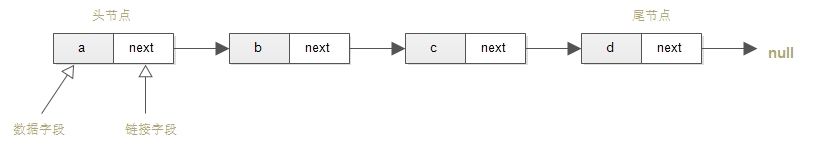
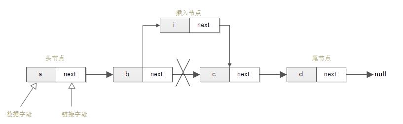
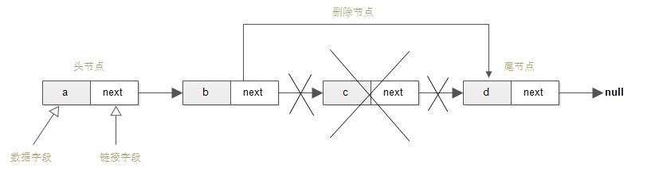
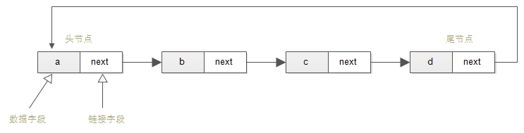
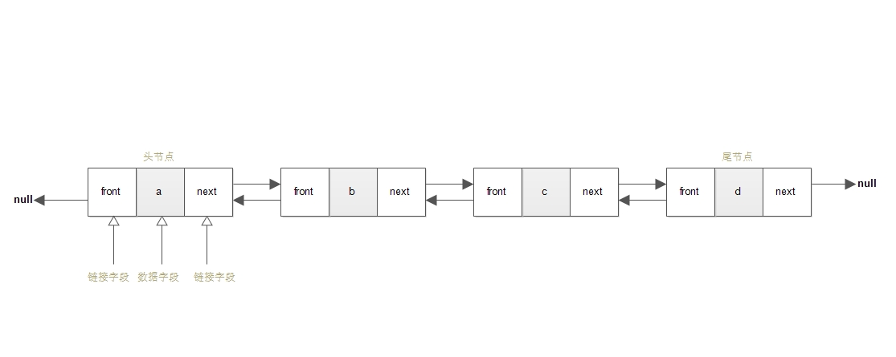
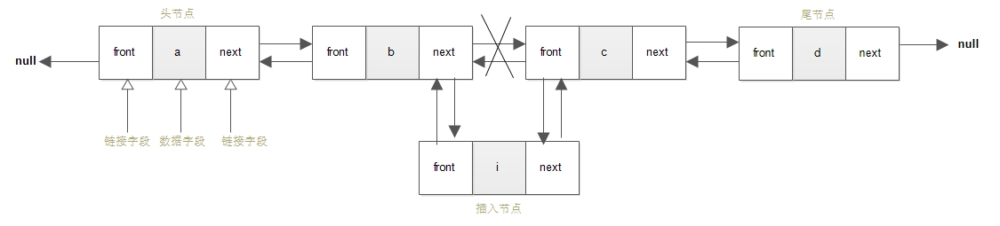
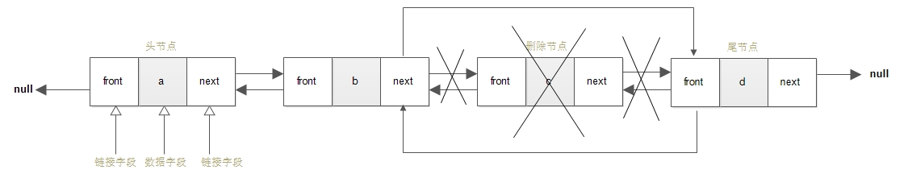

转载请注明来源：https://shicaid.github.io/2016/06/20/%E9%93%BE%E8%A1%A8/
这篇文章主要分析3个部分：单向链表、单向环形链表和双向链表。至于双向环形链表和单向环形链表相似，就不提了。如有更好的见解，望不吝赐教！
链表的定义
所谓链表，就是由许多相同数据类型的元素按照规定顺序排列而成的线性表。生活中，像火车就是个“链表”的很好例子，一节车厢连着一节车厢。与数组不同的是，当一个链表需要接入新数据时，就向系统申请一块内存空间，而不是一开始就分配好一定的空间。当然，链表也有其缺点，就是在查找数据时，需按顺序一个一个找。
单向链表
单向链表就像火车，只有一个头，一个尾，方向固定，每个车厢的内容是可以不一样的，每个车厢在链表中称为“节点”。那我们可以确定最简单的节点，包括两个基本字段：
| 字段1 |
字段2 |
| 数据字段（节点的数据） |
链接字段（指向后一个节点） |



在java中实现此链表也简单
1 2 3 4 5 6 7 8
| public class SinglyNode{ public String data; public SinglyNode next; public SinglyNode(String data) { this.data = data; this.next = null; } }
|
该类申明了以下方法：
| 方法名称 |
功能说明 |
| public SinlyLinkedList copy() |
拷贝当前链表的所有信息，返回一个新的链表 |
| public boolean isEmpty() |
当前链表是否为空，及是否有节点 |
| public void print() |
打印当前链表的信息 |
| public int length() |
当前链表长度，及节点数 |
| public boolean insert(int where,String data) |
在指定位置插入节点 |
| public boolean delete(int where) |
删除指定位置的节点 |
1 2 3 4 5 6 7 8 9 10 11 12 13 14 15 16 17 18 19 20 21 22 23 24 25 26 27 28 29 30 31 32 33 34 35 36 37 38 39 40 41 42 43 44 45 46 47 48 49 50 51 52 53 54 55 56 57 58 59 60 61 62 63 64 65 66 67 68 69 70 71 72 73 74 75 76 77 78 79 80 81 82 83 84 85 86 87 88 89 90 91 92 93 94 95 96 97 98 99 100 101 102 103 104 105 106 107 108 109 110 111 112 113
| public class SinglyLinkedList{ public SinglyNode head; public SinglyNode trail; private int size = 0; * * @return * 复制，返回新的链表 */ public SinglyLinkedList copy(){ SinglyLinkedList result = new SinglyLinkedList(); SinglyNode temp = head; while (temp!=null){ result.insert(length()-1,temp.data); temp = temp.next; } return result; } * 判空 * @return */ public boolean isEmpty(){ return size == 0; } * 打印链表 */ public void print(){ if (isEmpty()){ System.out.println("链表为空！"); return; } SinglyNode node = head; while (node != null){ System.out.print(node.data); node = node.next; if (node != null){ System.out.print("->"); } } System.out.println(); } public int length(){ return size; } * 在指定位置的插入节点 * @param where 指定位置 （-1 ---头节点） * @param data 值 * @return 插入成功与否 */ public boolean insert(int where,String data){ if (where < -1 || where >= length()) return false; SinglyNode newNode = new SinglyNode(data); if (isEmpty()){ head = newNode; trail = newNode; }else { if (where == -1){ newNode.next = head; head = newNode; }else { SinglyNode n = head; for (int i = 0; i < where; i++) { n = n.next; } newNode.next = n.next; n.next = newNode; if (newNode.next == null) { trail = newNode; } } } size++; return true; } * 删除指定位置的节点 * @param where 指定位置 （0--头节点） * @return 删除成功与否 */ public boolean delete(int where){ if (isEmpty() || where<0 || where >= length()) return false; SinglyNode n = head; if (where == 0){ head = head.next; n.next = null; n.data = ""; }else { for (int i = 0; i < where - 1; i++) { n = n.next; } SinglyNode delNode = n.next; n.next = delNode.next; if (delNode.next == null) { trail = n; } delNode.next = null; delNode.data = ""; } size--; return true; } }
|
单向链表的相关操作
反转，也就是原链表的头变成尾，尾变成头。比如一个链表a->b->c->d，反转后就是d->c->b->a。
1 2 3 4 5 6 7 8 9 10 11 12 13 14 15 16 17 18 19 20
| * 单向链表反转 * @param linkedList */ public static void reverse(SinglyLinkedList linkedList) { if (linkedList==null || linkedList.isEmpty()) { return; } SinglyNode current = linkedList.head; SinglyNode before = null; SinglyNode temp = null; linkedList.trail = current; while (current != null) { temp = before; before = current; current = current.next; before.next = temp; } linkedList.head = before; }
|
串联，就是把若干个链表串成以个链表。实现起来比较容易，只需前一个链表的尾节点指向后一个链表的头节点就行了，这里就不增加篇幅了。
单向环形链表
顾名思义，单向环形链表其实就是自身的尾节点指向自身的头节点，形成一个环形结构，其特点是在链表上的任意一个节点，都可达到此链表内的各个节点。虽然环形链表不存在头节点和尾节点，但为了方便，我们还是选择了定义一个头节点和尾节点。

单向环形链表和单向链表非常相似，相似到插入和删除只需考虑在尾节点和头节点的特殊情况外，其他一律相同。
当向尾节点后插入新节点，新节点则成为了新链表的尾节点，同时指向头节点。插入节点的代码和单向链表的大致一样，只需修改两处即可：
if (newNode.next == null) 改为 if (newNode.next == head)- 在
if (where == -1){ //插入头节点 后加一句 trail.next = newNode;
同样，删除节点与插入节点一样，只需多考虑下头尾节点，其他与单向链表一样，同样只需修改两处：
if (where == 0){ //如果待删除的节点是头节点后加一句trail.next = head.next;if (delNode.next == null) { //如果待删除的节点是尾节点改为if (delNode.next == head) { //如果待删除的节点是尾节点
双向链表
在单向链表或环形链表中，只能沿着同一个方向查找数据，而且如果一不小心有一个节点断裂，则此节点后面的链表就会消失而无法挽救。双向链表可以改善这两个缺点，因为它不仅有向后的指针，还有向前的指针。
| 字段1 | 字段2 | 字段3 |
| :–:| :–: | :–:|
|链接字段（指向前一个节点） |数据字段（节点的数据）| 链接字段（指向后一个节点） |

1 2 3 4 5 6 7 8 9 10 11
| class DoubleNode{ DoubleNode front; String data; DoubleNode next; public DoubleNode(String data) { this.data = data; front = null; next = null; } }
|

下面只给出相应方法：
1 2 3 4 5 6 7 8 9 10 11 12 13 14 15 16 17 18 19 20 21 22 23 24 25 26 27 28 29 30 31 32 33 34 35 36 37 38 39
| * 插入节点 * @param where 指定位置 （-1 ---插入头节点,0----头节点后插入节点） * @param data 值 * @return 插入成功与否 */ public boolean insert(int where, String data) { if (where < -1 || where >= length() ) return false; DoubleNode newNode = new DoubleNode(data); if (isEmpty()){ head = newNode; trail = newNode; }else { if (where == -1) { newNode.next = head; head.front = newNode; head = newNode; } else { DoubleNode temp = head; for (int i = 0; i < where; i++) { temp = temp.next; } DoubleNode tempNext = temp.next; if (tempNext == null) { temp.next = newNode; newNode.front = temp; trail = newNode; } else { newNode.next = tempNext; tempNext.front = newNode; newNode.front = temp; temp.next = newNode; } } } size++; return true; }
|

下面只给出相应方法：
1 2 3 4 5 6 7 8 9 10 11 12 13 14 15 16 17 18 19 20 21 22 23 24 25 26 27 28 29 30 31 32 33
| * 删除指定位置的节点 * @param where 指定位置 （0--头节点） * @return 删除成功与否 */ public boolean delete(int where) { if (isEmpty() || where<0 || where>=length()) return false; if (where == 0){ if (length() == 1){ head = null; trail = null; }else { head = head.next; head.front = null; } }else if (where == length()-1){ trail = trail.front; trail.next = null; }else { DoubleNode toDel = head; for (int i = 0; i < where; i++) { toDel = toDel.next; } toDel.front.next = toDel.next; toDel.next.front = toDel.front; toDel.front = null; toDel.next = null; toDel.data = ""; } size--; return true; }
|
关于链表的相关知识总结就暂时到此，有什么疑问可以在下面留言，我会尽我最大努力帮你解答，当然，有更好的建议十分欢迎提出！ps.最近各种繁琐事情，导致与上一篇相隔这么久( ╯□╰ )，我会努力坚持下去的。